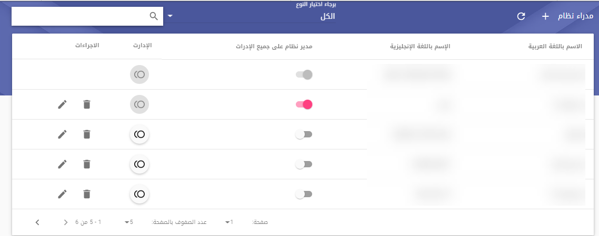

<md-dialog class="context-help-background" id="help-dialog">
    <div layout="column">
        <div class="auto-style1">
            <md-toolbar>
                <span class="p20">مدراء النظام</span>
                <close-dialog-directive></close-dialog-directive>
            </md-toolbar>
            <md-content class="p20" scroll-directive>
                <p class="auto-style1">تم تعديل صلاحيات مدير النظام لينقسم مدير النظام
                    الى نوعين
                    </p>
                <p class="auto-style1">مدير على كل الادارات : ويستطيع المستخدم الحاصل على هذه
                    الصلاحيات من التحكم في جميع الادارات وجميع المستخدمين بالنظام</p>
                <p class="auto-style1">مدير فرعي للنظام : وهنا يتمكن هذا المدير من التحكم في عدد
                    معين من الادارات كما يحدد له من شاشة مدراء النظام ولا يتمكن من التحكم في اي
                    ادارة اخرى
                </p>
                <p class="auto-style1">شاشة مدراء النظام تم إضافتها من شاشات مدير النظام وهي
                    تظهر فقط للمدير على كل الادارت ولا تظهر للمديرين الفرعيين ومنها يتمكن المدير من
                    اضافة مدراء اخرين سواء على كل النظام أو مدراء فرعيين</p>
                <p class="auto-style1">ويمكن أضافة المدراء من خلال ايقونة اضف تظهر في الجزء
                    العلوي من الشاشة و سيؤدي الضغط عليها إلى عرض شاشة تحتوي على ما يلي</p>
                <p class="auto-style1">تبديل الاختيار بين مدير النظام ومدير النظام على كل
                    الإدارات </p>
                <p class="auto-style1">إضافة زر لإضافة المستخدم إلى قائمة مع نوع المديرالمحدد</p>
                <p class="auto-style1">عد اختيار برنامج مدير النظام على كل الإدارات، فسيكون زر
                    الإضافة مفعلا
                </p>
                <p class="auto-style1">اذا تم تحديد الاختيار في مدير النظام، فسيظهر مربع حوار
                    للبحث عن مستخدم عن طريق الوحدة الإدارية
                    </p>
                <p class="auto-style1">بعد اختيار المستخدم، ستظهر قائمة بالإدارات التي ينتمي
                    إليها</p>
                <p class="auto-style1">ثم يمكن اختيار المستخدم كمديرفي إدارة واحدة أو عدة إدارات</p>
                <p class="auto-style1">سيؤدي اختيار المستخدم كمديرعلى كل الإدارات إلى إزالة جميع
                    الإدارات المعينة كمدير معه وتجاوزها</p>
                <p class="auto-style1">
                    </p>
                <style type="text/css">
                    .auto-style1 {
                        text-align: right;
                    }

                    .auto-style2 {
                        vertical-align: middle;
                    }
                </style>
        </div>
        </md-content>
    </div>
</md-dialog>
